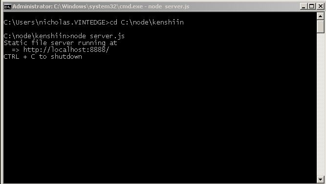

for windows : Windows Installer (.msi) {you will see a button showing windows and text like node-v0.10.16-x86.msi}
after download, run the file
locate folder to install at C Drive -->
i) Copy this web folder path example
ii) Open command pormpt : Start -> Run -> cmd --> and then press Enter
remark 1* --> copy text on console : right click > Mark > highlight text to copy, right click
remark 2* --> paste text on console : right click > Paste
iii) Key in on the console, press Enter
iii) Key in on the console
iv) Copy the url and open on your web browser, Example
